처음처럼
2026.03 20주년 헤리티지 리뉴얼, 2026.09 16도→15.7도 인하
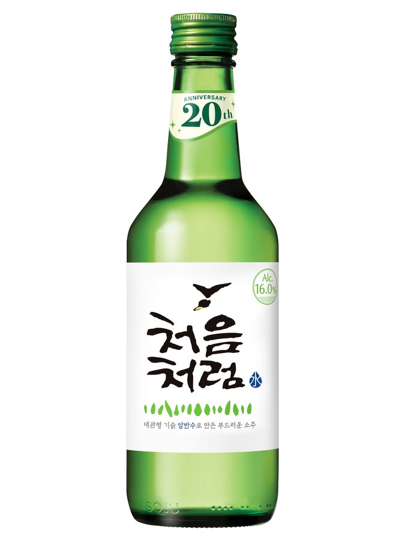
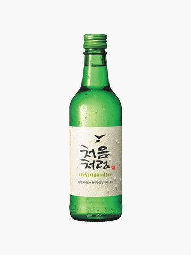
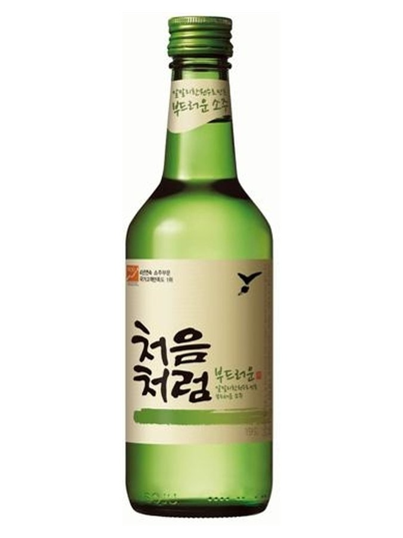
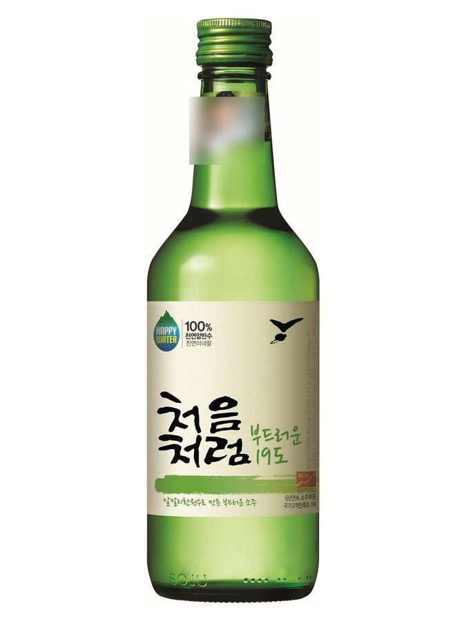
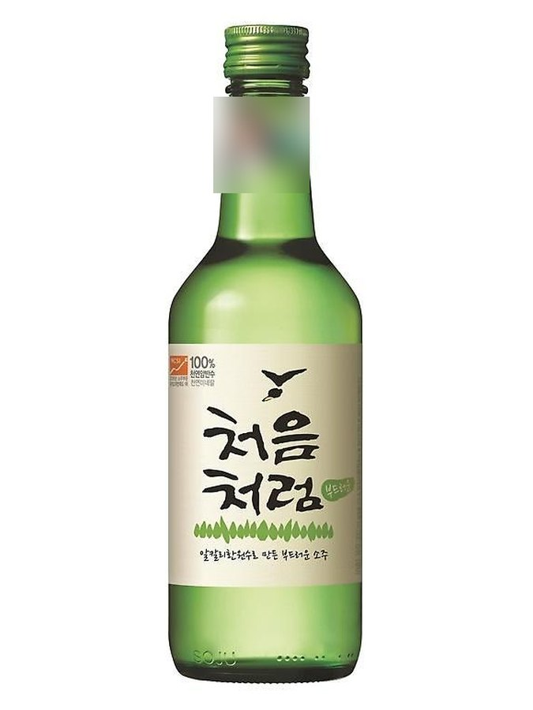
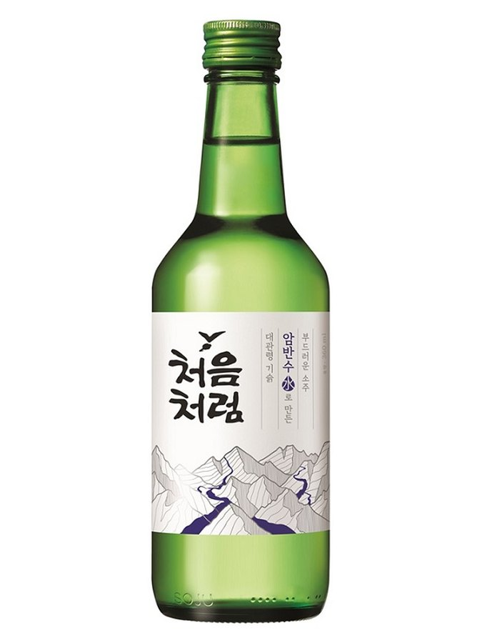
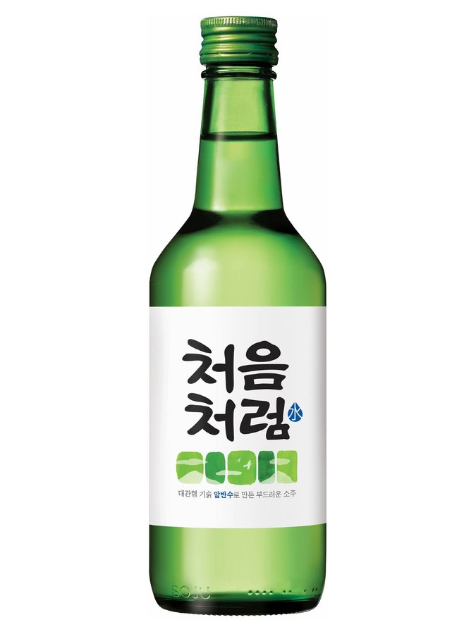
이름 유래
사회운동가·서예가 신영복 교수의 글귀에서 영감. "세상과 사람을 처음 만났을 때처럼 순수하게". 동시에 "음주 다음 날도 몸이 처음처럼 돌아오길"이라는 이중 의미. 브랜드 네이밍은 참이슬과 마찬가지로 크로스포인트(대표 손혜원)가 담당.상세 연혁
두산경월이 2006년 2월 7일 출시. 대관령 알칼리수 사용 강조. 2009년 롯데에 인수. 2026년 3월 출시 20주년 헤리티지 리뉴얼 — 초기 디자인의 어린 새·새싹 이미지와 대관령 암반수를 형상화한 물방울 그래픽 적용, '16도' 도수 표기 전면 배치, 병목에 'Since 2006 · 20th ANNIVERSARY' 넥라벨. 신영복 교수는 사례비를 받지 않았다고 알려짐.변경 이력
2006.02
20도로 출시
2007
20도 → 19.5도로 인하
2012.06
제품 3종을 하나로 통합하며 19도로 인하
2014.02
19도 → 18도로 인하
2014.12
18도 → 17.5도로 인하
2018.04
17.5도 → 17도로 인하
2019.12
17도 → 16.9도로 인하
2021
16.9도 → 16.5도로 인하
2025.07
16.5도 → 16도로 인하
2026.09
16도 → 15.7도로 재인하, 감미료 함량도 함께 조정
스페셜 에디션
2015.11
'처음처럼 스티키몬스터' — 디자인그룹 스티키몬스터랩 협업 한정판, 홍대 팝업스토어 판매 후 시중 판매
2018.04
일러스트레이터 집시 협업 한정판 패키지 2종
2020.04
'처음처럼 플렉스' — 래퍼 염따 협업 한정판, 16.7도
롯데주류의 다른 소주
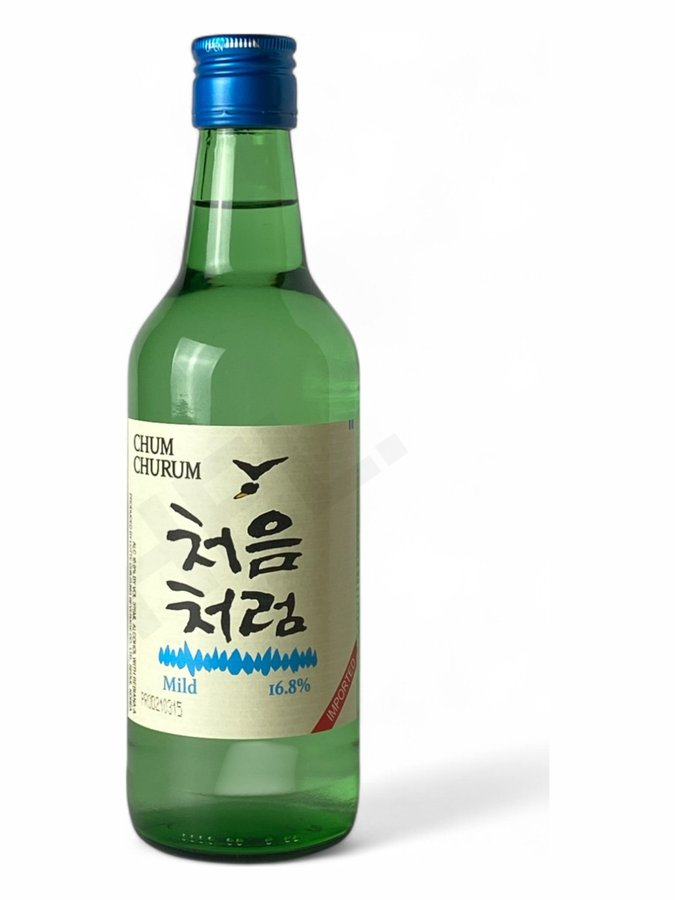
CHUM CHURUM2006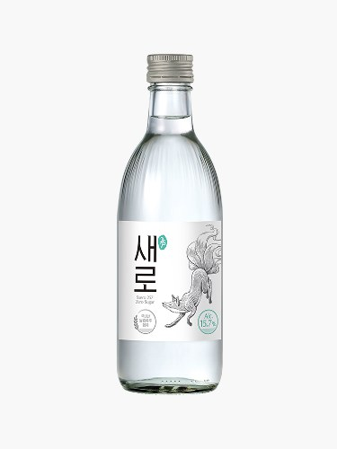
새로15.7도 · 2022.09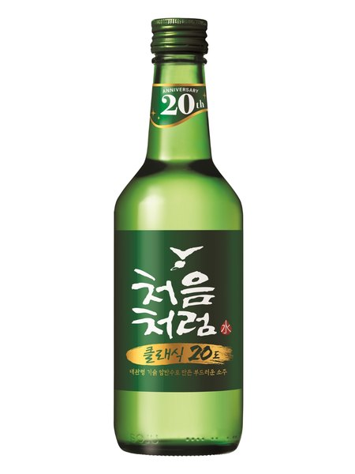
처음처럼 클래식20도 · 2026.05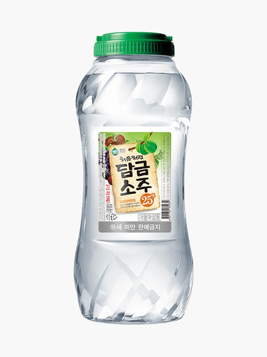
처음처럼 담금소주25~35도 · 2007.04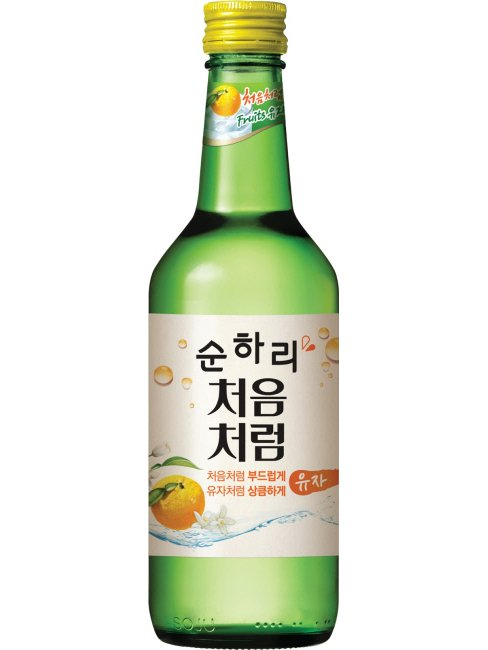
순하리 유자12도 · 2015.03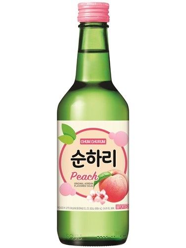
순하리 복숭아12도 · 2015.07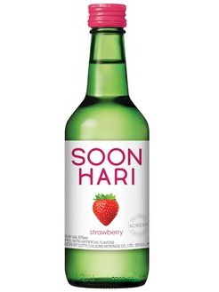
순하리 딸기12도 · 2017.12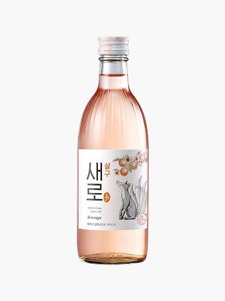
새로 살구12도 · 2024.04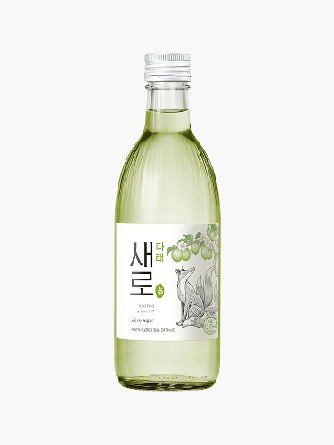
새로 다래12도 · 2025.04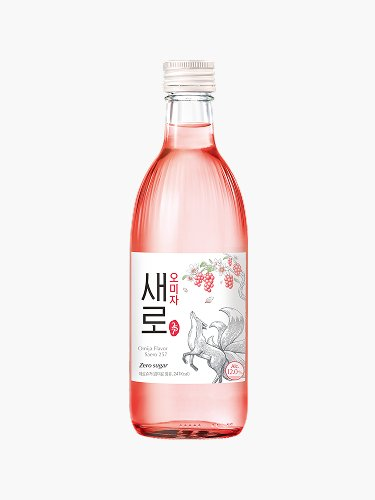
새로 오미자12도 · 2026.05새로 리치12도 · 2024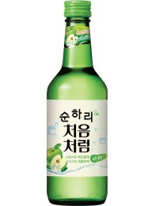
순하리 사과12도 · 2015.12.01